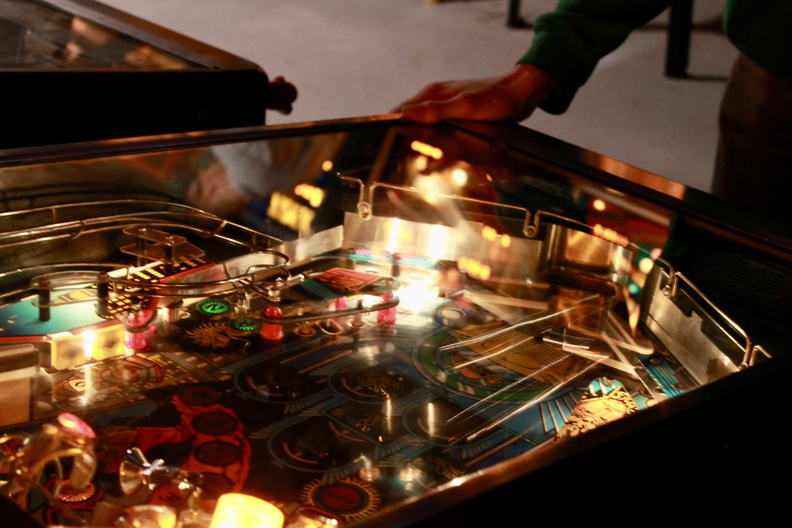
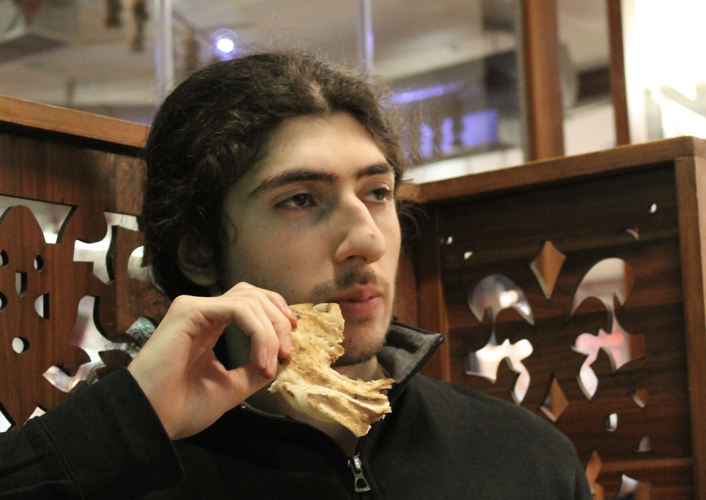
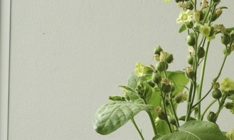

Kulttuuri / 17.4.2023
Savukkeiden alueellinen eroavaisuus
Ulkomaanmatkalle lähtiessään voi huomata tuttujen tuotteiden - kuten kokiksen - maistuvan ulkomailla hieman erilaiselta. Tämä makuaistimus ei kuitenkaan ole pelkkää matkan hurmetta tai mielikuvituksen tuotetta, vaan suurienkin yritysten tuotteissa on alueellista vaihtelua reseptin suhteen.


Näköislehti / 17.4.2023
L&M vihreä kautta aikojen
Mentolitupakka on nykyään vain haave kotimaiselle kuluttajalle, eikä kunnon mentoleita ole saanut kaupoista vuosiin. Mitä tapahtuikaan vihreälle tupakalle, sen tietää pitkän linjan kuluttaja. Meille, jotka emme ole todistaneet sen rapautumista, on arkeologia keinomme tietää.

